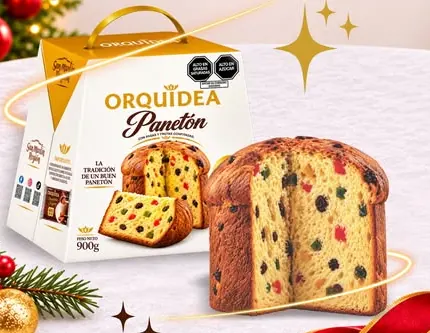
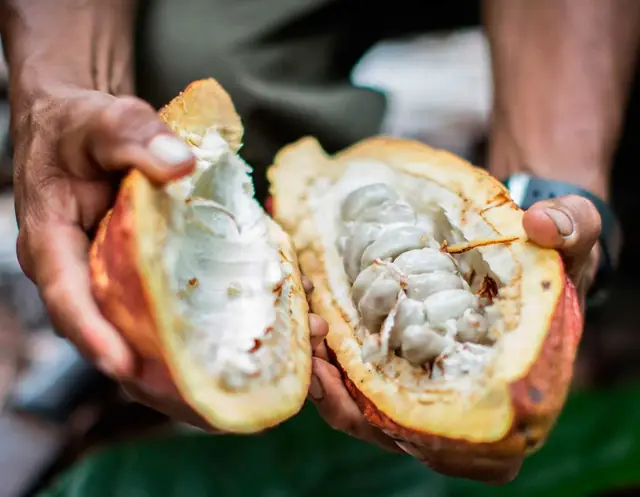
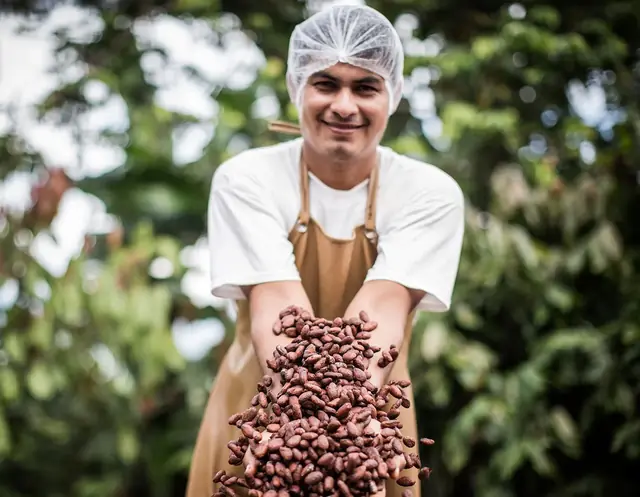

Panetón Orquídea
S/ 39.90 (precio referencial, por confirmar)
Chocolate hecho a mano en Tarapoto, San Martín, con cacao orgánico de la Amazonía peruana. Más de 25 años haciendo chocolate en la selva, y ahora lo enviamos a todo el Perú.

S/ 39.90 (precio referencial, por confirmar)
Precios con IGV incluidoEnvíos a todo el Perú Precio en contorno: referencial, se confirma por WhatsApp
¿Compras para tu empresa o tu pastelería? Pide una cotización.

Orquídea nació como un proyecto para sembrar cacao como alternativa a la hoja de coca y darle a la selva de San Martín un desarrollo sostenible.
Desde entonces hacemos el chocolate en el mismo lugar donde crece el cacao: nuestra planta está en Tarapoto, en la Amazonía peruana. El cacao de San Martín tiene un aroma intenso, con notas frutales y ácidas, y lo trabajamos con técnicas propias de poscosecha.
Lo convertimos en chocolate hecho a mano, con ingredientes nativos como la kiwicha, la quinua y el maracuyá. Sin cacao en polvo ni grasas vegetales hidrogenadas.
La chacraPequeños agricultores de San Martín cosechan las mazorcas.
Fermentación y secadoCon técnicas propias de poscosecha, que definen el sabor.
La planta de TarapotoDonde el grano se convierte en chocolate, a mano.
Tu mesaEn empaque térmico, a cualquier lugar del Perú.

Trabajamos con pequeños agricultores de comunidades nativas de San Martín: algunos llevan décadas cultivando cacao y otros recién empiezan.
Estamos preparando estas historias junto con cada familia.
Las certificaciones vigentes de nuestro cacao (orgánico y comercio justo) se publicarán aquí, con sus sellos, en cuanto terminemos de actualizarlas.
¿Las necesitas para tu empresa? Escríbenos a hola@orquideaperu.com.
Consulta disponibilidad en cada tienda.
Jr. Santa Mónica 200, Tarapoto, San Martín
Horario: por confirmar
Cómo llegarRegalos para empresas, pedidos por volumen, coberturas para pastelería y exportación. Cuéntanos qué necesitas y te enviamos una cotización.